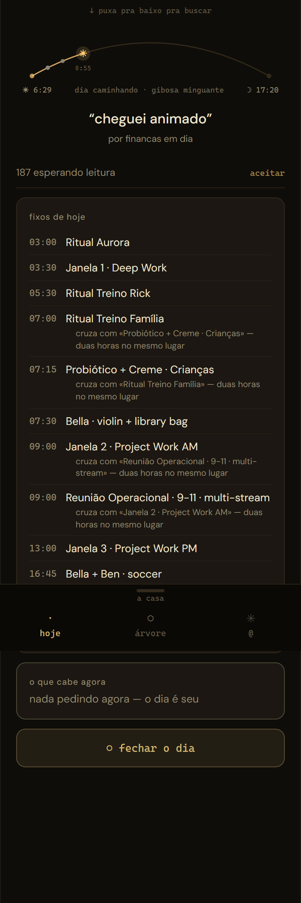
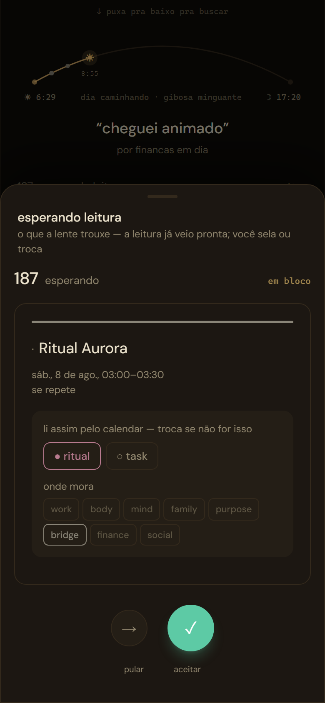
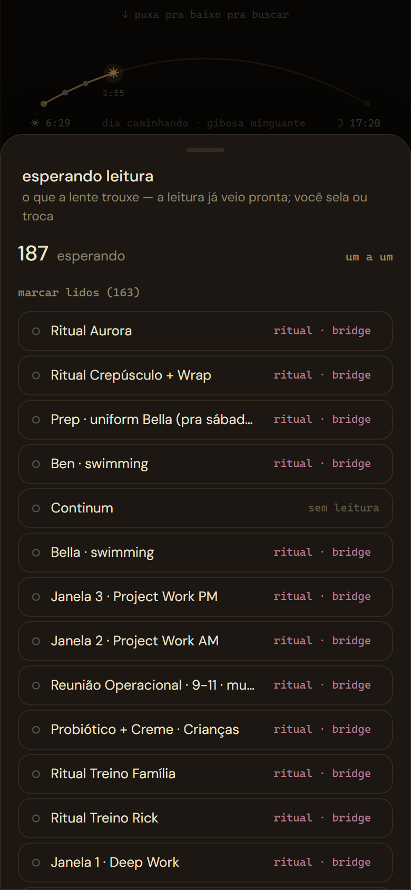
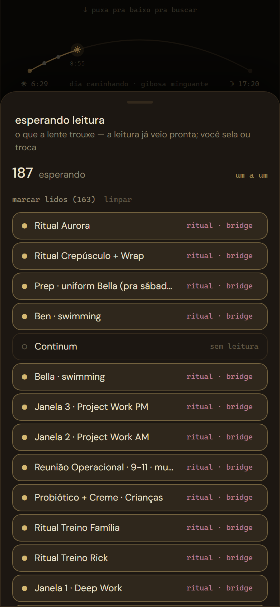
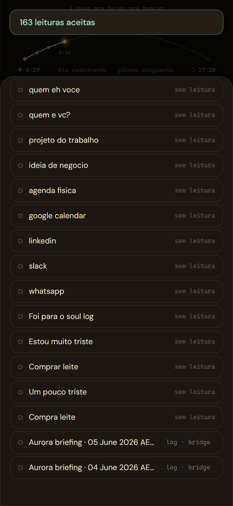
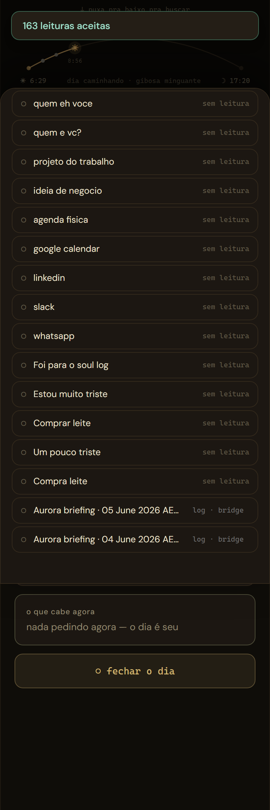
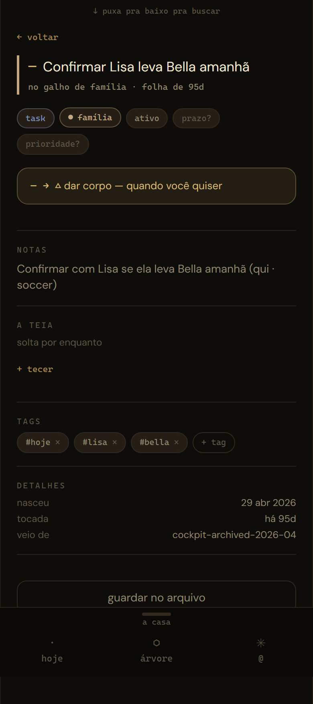
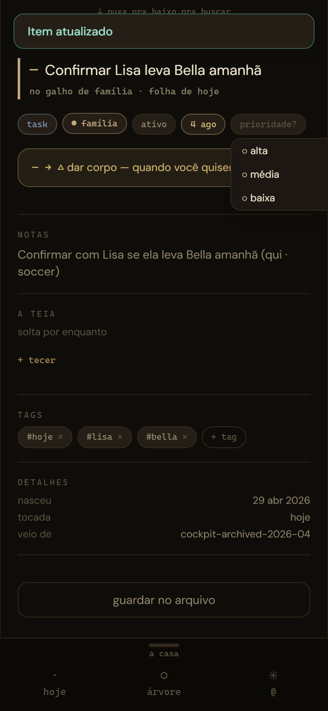
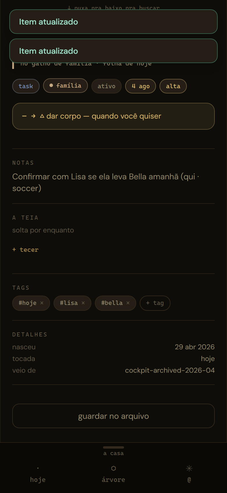
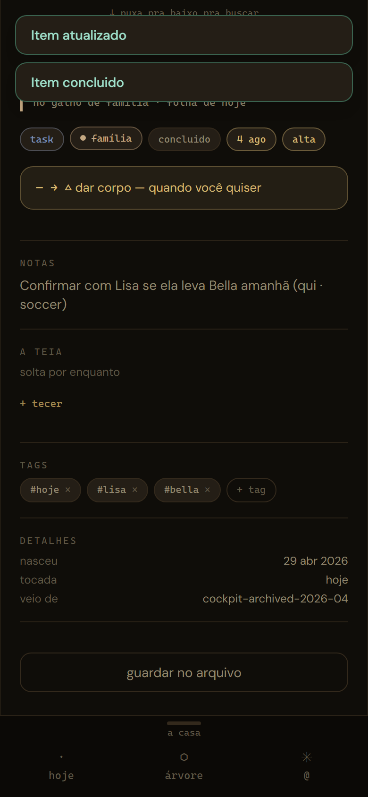

Onda 4 · mesa item 3 · teste real virtual · 3 Ago 2026
A mesa pedia o teste ao vivo dos 178 reais — a vida é do Rick. Então a casa fez o que dá pra fazer sem tomar o gesto dele: puxou o retrato do banco vivo (leitura apenas, Management API), semeou o mundo hermético com a matéria real, e dirigiu o app no fio. Produção intocada. E a matéria real fez o que matéria de mentira nunca faz: revelou coisas.
O que este teste é (e não é). Dados reais, mundo virtual. Os 187 do inbox — títulos, tags, datas, tudo como está no banco de 3 Ago — dentro do mesmo mock com estado do exame 21. Cada aceite grava no tronco de teste; produção não recebe um byte. O teste ao vivo continua sendo teu — este ensaio prova que os gestos aguentam o volume e o formato da tua vida, não substitui ela.
Da auditoria 20 (30 Jul) pra cá o inbox cresceu de 178 pra 187 — o cron não para. O check-in de hoje já estava lá: «aurora — animado», 07:58. E no meio dos crus, uma relíquia: o «Comprar leite» do Telegram da Onda 2, ainda esperando leitura.
O gesto exato da mesa: HOJE → puxador → «em bloco» → marcar lidos → aceitar. Com 163 aceites reais em sequência, a esteira drenou em segundos — o volume da vida cabe no gesto.






achado 1 · só matéria real expõe Dois itens vivem em estado impossível. Os «Aurora briefing» de junho estão state='inbox' com genesis_stage=2 e status='active' — o trio inconsistente. O FSM recusa o classify deles («Item nao esta no inbox») e o aceite em bloco não os drena: ficam na fila pra sempre. O exame de 1 Ago nunca viu isso — os 12 itens de mentira nasceram todos no estágio 1. Pede conserto de dado (update pontual ou migration), decisão da mesa.
achado 2 · a esteira conta o que não gravou O toast diz «163 leituras aceitas» — gravaram 161. O classify do hook engole o erro e devolve null em vez de lançar; o contador da esteira (Assentimento.aceitarSelecionados) só incrementa falhas no catch — que nunca dispara. O comentário do código promete «falha não anda e é contada»; a segunda metade não acontece. Conserto de uma linha (contar o null como falha), pede mesa.
«Confirmar Lisa leva Bella amanhã» — task real, galho família, tags #hoje #lisa #bella, nascida em 29 abr (veio do cockpit arquivado). O ensaio fez com ela o ciclo inteiro que a vida faria: prazo amanhã (literalmente o que o título pede), alta, concluída.




POST /rest/v1/atom_events ← capturado no clique do «concluido» { "source_id": "f696767f-880a-4d55-a0b8-f3d53bda3a2d", ← o UUID real da task "event_type": "touch", "target_id": null, "payload": {} }
O conserto 7 aguenta matéria real: quando tu concluíres a task da Lisa de verdade, é exatamente este evento que nasce — e é ele que o digest lê pra saber que a ausência acabou.
A mesa perguntava: «reparar se a fala de 07:15 mudou». A resposta veio do banco vivo, e é melhor que um sim: a fala escolheu não se repetir. O cron rodou todos os dias; o v3 olhou, viu que nada mudou desde 31 Jul, e ficou quieto — DP-F, o raro tem memória.
cron.job daily-digest · 15 21 * * * · active (21:15 UTC = 07:15 Brisbane) 31 Jul → 3 Ago succeeded · succeeded · succeeded · succeeded resposta de hoje 200 {"sent": false, "reason": "nada mudou desde a última fala"} último digest 31 Jul 07:15 · fingerprint: 5 ausências «nunca»
Por que isso é o desenho funcionando. Cinco ausências «nunca teve registro» faladas todo dia matariam a raridade que justifica a válvula existir. A impressão digital só muda quando um touch real cruza um degrau — e o Ato II acabou de provar que o touch nasce no gesto. O circuito está fechado; falta só a vida passar por ele.
| O que a mesa pedia (item 3) | O que o ensaio provou | Estado |
|---|---|---|
| os 178 reais em bloco | 187 reais: puxador → em bloco → marcar lidos (163) → aceitar; fila 187 → 26 em segundos | ✓ os gestos aguentam a vida |
| o rastro no gesto real | touch com UUID real capturado no fio, no clique do «concluido» | ✓ provado |
| a fala do digest | cron vivo, 200 todos os dias; v3 recusa repetir fala idêntica (DP-F) | ✓ quieto por desenho |
| achado 1 · drift state×stage | 2 «Aurora briefing» inaceitáveis pelo FSM — presos na fila | ◌ pede conserto de dado |
| achado 2 · contador da esteira | toast conta os recusados como aceitos (163 ≠ 161) | ◌ pede conserto de 1 linha |
| o teste ao vivo | — | ◌ segue sendo teu |